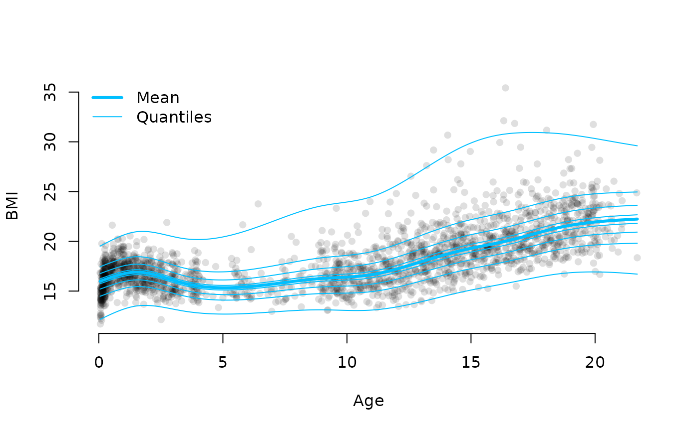

Worked Examples
Examples.RmdExample 1: Random regression with non-Gaussian data
Our first example is the chicken weight data set, already used in the
RTMB Introduction vignette.
We fit the same random regression model, where each chick has its own intercept and slope parameters that are assumed to be normally distributed. However, instead of assuming normal errors, we assume that the observations given the time and chick follow a Box-Cox Cole-Green (BCCG) distribution, which allows for skewness in the data.
data(ChickWeight)
parameters <- list(
mua=0, # Mean slope
log_sda=1, # log-Std of slopes
mub=0, # Mean intercept
log_sdb=1, # log-Std of intercepts
log_sigma=0, # log-Scale of BCCG distribution
nu = 0.1, # Skewness of BCCG distribution
a=rep(0, 50), # Random slope by chick
b=rep(5, 50) # Random intercept by chick
)The joint negative log-likelihood function has the same structure as
in the RTMB vignette, but with the normal likelihood
replaced by the BCCG likelihood, and hence also some necessary parameter
transformations.
nll_chick <- function(parms) {
getAll(ChickWeight, parms, warn=FALSE)
# Optional (enables extra RTMB features)
weight <- OBS(weight)
# Initialise joint negative log likelihood
nll <- 0
# Random slopes
sda <- exp(log_sda); ADREPORT(sda)
nll <- nll - sum(dnorm(a, mean=mua, sd=sda, log=TRUE))
# Random intercepts
sdb <- exp(log_sdb); ADREPORT(sdb)
nll <- nll - sum(dnorm(b, mean=mub, sd=sdb, log=TRUE))
# Data
predWeight <- exp(a[Chick] * Time + b[Chick])
sigma <- exp(log_sigma); ADREPORT(sigma)
nll <- nll - sum(dbccg(weight, mu=predWeight, sigma=sigma, nu=nu, log=TRUE))
# Get predicted weight uncertainties
ADREPORT(predWeight)
# Return
nll
}The model can then again be fitted by constructing the Laplace-approximated marginal log-likelihood function and optimising this using any standard numerical optimiser.
obj_chick <- MakeADFun(nll_chick, parameters, random=c("a", "b"), silent = TRUE)
opt_chick <- nlminb(obj_chick$par, obj_chick$fn, obj_chick$gr)We can use RTMB’s automatic simulation capabilities to
simulate from the fitted model and run a check whether the Laplace
approximation is adequate. All of this is done by a simple call to
checkConsistency().
set.seed(1)
checkConsistency(obj_chick)
#> Parameters used for simulation:
#> mua log_sda mub log_sdb log_sigma nu
#> 0.07799513 -3.86869405 3.80355961 -2.65747574 -2.32420504 3.44873713
#>
#> Test correct simulation (p.value):
#> [1] 0.7383633
#> Simulation appears to be correct
#>
#> Estimated parameter bias:
#> mua log_sda mub log_sdb log_sigma
#> -0.0001346800 0.0064958230 -0.0001147128 -0.0147141495 0.0042912804
#> nu
#> -0.0836398603Lastly, we can also automatically calculate quantile residuals via
probability integral transform using oneStepPredict().
osa_chick <- oneStepPredict(obj_chick, discrete=FALSE, trace=FALSE)
qqnorm(osa_chick$res); abline(0,1)We see that this model is still not a great fit but a bit better than the Gaussian model.
Example 2: Non-standard random GLM for count data
Our second example is the InsectSprays data set. We will
fit a GLMM where the counts are assumed to follow a generalised
Poisson distribution, allowing for overdispersion (compared to the
standard Poisson distribution). In the model, we simple include a random
effect for each spray type, to account for the fact that some sprays are
more effective than others.
data(InsectSprays)
# Creating the model matrix
X <- model.matrix(~ spray - 1, data = InsectSprays)
par <- list(
beta0 = log(mean(InsectSprays$count)),
beta = rep(0, length(levels(InsectSprays$spray))),
log_phi = log(1),
log_sigma = log(1)
)
dat <- list(
count = InsectSprays$count,
spray = InsectSprays$spray,
X = X
)
nll_insect <- function(par) {
getAll(par, dat, warn=FALSE)
count <- OBS(count)
# Random effect likelihood
sigma <- exp(log_sigma); ADREPORT(sigma)
nll <- - sum(dnorm(beta, 0, sigma, log = TRUE))
# Data likelihood
lambda <- exp(beta0 + as.numeric(X %*% beta)); ADREPORT(lambda)
phi <- exp(log_phi); ADREPORT(phi)
nll <- nll -sum(dgenpois(count, lambda, phi, log = TRUE))
nll
}
obj_insect <- MakeADFun(nll_insect, par, random = "beta", silent = TRUE)
opt_insect <- nlminb(obj_insect$par, obj_insect$fn, obj_insect$gr)
# Checking if the Laplace approximation is adequate
checkConsistency(obj_insect)
#> Parameters used for simulation:
#> beta0 log_phi log_sigma
#> 1.9751913 -3.8913794 -0.2221668
#>
#> Test correct simulation (p.value):
#> [1] 0.605786
#> Simulation appears to be correct
#>
#> Estimated parameter bias:
#> beta0 log_phi log_sigma
#> -0.01672544 0.03395053 -0.00437216
# Check okay
# Calculating quantile residuals
osa_insect <- oneStepPredict(obj_insect, method = "oneStepGeneric",
discrete=TRUE, trace=FALSE)
qqnorm(osa_insect$res); abline(0,1)
Example 3: Distributional regression with penalised splines
Our third example covers the dutch boys BMI data set, part of the
gamlss.data package. We will fit a distributional
regression model where the location, scale, and skewness parameters of
the Box-Cox power exponential (BCPE) distribution are modelled as smooth
functions of age using penalised splines. The kurtosis parameter will be
kept constant.
We start by loading packages that are needed.
library(gamlss.data) # Data
library(LaMa) # Creating model matrices
library(Matrix) # Sparse matrices
data(dbbmi)
# Subset (just for speed here)
set.seed(1)
ind <- sample(1:nrow(dbbmi), 2000)
dbbmi <- dbbmi[ind, ]We use the function make_matrices() from package
LaMa to conveniently create design and penalty matrices for
the smooth functions. Internally, this just interfaces
mgcv. The penalty matrix is converted to a sparse matrix
using the Matrix package, to work with RTMB’s
dgmrf() function.
k <- 10 # Basis dimension
modmat <- make_matrices(~ s(age, bs="cs"), data = dbbmi)
X <- modmat$Z # Design matrix
S <- Matrix(modmat$S[[1]], sparse = TRUE) # Sparse penalty matrixThe joint negative log-likelihood function computes covariate
dependent location, scale, and skewness parameters using the design
matrix and regression coefficients. The regression coefficients are
treated as random effects with a multivariate normal distribution with
zero mean and a precision matrix that is a scaled version of the penalty
matrix, which is achieved by calling dgmrf() for each of
them. The scaling/ smoothing parameters are estimated by restricted
maximum likelihood (REML), which is achieved by treating them as
fixed effects and integrating out the regression coefficients and other
fixed effects using the Laplace approximation.
nll_dbbmi <- function(par) {
getAll(par, dat, warn=FALSE)
bmi <- OBS(bmi)
# Calculating response parameters
mu <- exp(X %*% c(beta0_mu, beta_age_mu)); ADREPORT(mu) # Location
sigma <- exp(X %*% c(beta0_sigma, beta_age_sigma)); ADREPORT(sigma) # Scale
nu <- X %*% c(beta0_nu, beta_age_nu); ADREPORT(nu) # Skewness
tau <- exp(log_tau); ADREPORT(tau) # Kurtosis
# Data likelihood: Box-Cox power exponential distribution
nll <- - sum(dbcpe(bmi, mu, sigma, nu, tau, log=TRUE))
# Penalised splines as random effects: log likelihood / penalty
lambda <- exp(log_lambda); REPORT(lambda)
nll <- nll - dgmrf(beta_age_mu, 0, lambda[1] * S, log=TRUE)
nll <- nll - dgmrf(beta_age_sigma, 0, lambda[2] * S, log=TRUE)
nll <- nll - dgmrf(beta_age_nu, 0, lambda[3] * S, log=TRUE)
nll
}
par <- list(
beta0_mu = log(18), beta0_sigma = log(0.15),
beta0_nu = -1, beta_age_mu = rep(0, k-1),
beta_age_sigma = rep(0, k-1), beta_age_nu = rep(0, k-1),
log_tau = log(2),
log_lambda = log(rep(1e4, 3))
)
dat <- list(
bmi = dbbmi$bmi,
age = dbbmi$age,
X = X,
S = S
)As we are using REML, we are integrating out all parameters
that are not smoothing parameters log_lambda. The model is
then fitted by constructing the Laplace-approximated restricted
log-likelihood function and optimising this.
# Restricted maximum likelihood (REML) - also integrating out fixed effects
random <- names(par)[names(par) != "log_lambda"]
obj_dbbmi <- MakeADFun(nll_dbbmi, par, random = random, silent = TRUE)
opt_dbbmi <- nlminb(obj_dbbmi$par, obj_dbbmi$fn, obj_dbbmi$gr)We can have access to all ADREPORT()ed quantities and
their standard deviation using sdreport().
sdr <- sdreport(obj_dbbmi, ignore.parm.uncertainty = TRUE)
par <- as.list(sdr, "Est", report = TRUE)
par_sd <- as.list(sdr, "Std", report = TRUE)This way, we can easily plot the estimated smooth functions with confidence intervals and the conditional distribution of BMI given age.
age <- dbbmi$age
ord <- order(age)
# Plotting estimated effects
oldpar <- par(mfrow = c(1,3))
plot(age[ord], par$mu[ord], type = "l", lwd = 2, bty = "n", xlab = "Age", ylab = "Mu")
polygon(c(age[ord], rev(age[ord])),
c(par$mu[ord] + 2*par_sd$mu[ord], rev(par$mu[ord] - 2*par_sd$mu[ord])),
col = "#00000020", border = "NA")
plot(age[ord], par$sigma[ord], type = "l", lwd = 2, bty = "n", xlab = "Age", ylab = "Sigma")
polygon(c(age[ord], rev(age[ord])),
c(par$sigma[ord] + 2*par_sd$sigma[ord], rev(par$sigma[ord] - 2*par_sd$sigma[ord])),
col = "#00000020", border = "NA")
plot(age[ord], par$nu[ord], type = "l", lwd = 2, bty = "n", xlab = "Age", ylab = "Nu")
polygon(c(age[ord], rev(age[ord])),
c(par$nu[ord] + 2*par_sd$nu[ord], rev(par$nu[ord] - 2*par_sd$nu[ord])),
col = "#00000020", border = "NA")
par(oldpar)
# Plotting conditional distribution
plot(dbbmi$age, dbbmi$bmi, pch = 16, col = "#00000020",
xlab = "Age", ylab = "BMI", bty = "n")
lines(age[ord], par$mu[ord], lwd = 3, col = "deepskyblue")
# Compute quantiles (point estimates)
par <- lapply(par, as.numeric)
ps <- seq(0, 1, length = 8)
ps[1] <- 0.005 # avoid 0 and 1
ps[length(ps)] <- 0.995 # avoid 0 and 1
for(p in ps) {
q <- qbcpe(p, par$mu, par$sigma, par$nu, par$tau) # quantiles
lines(age[ord], q[ord], col = "deepskyblue")
}
legend("topleft", lwd = c(3, 1), col = "deepskyblue", legend = c("Mean", "Quantiles"), bty = "n")
Example 4: Zero inflation
In this example, we look at the aep data set, containing
data on the number of inappropriate days spent in the hospital and the
length of a stay for patients admitted to a hospital in Barcelona. These
data have been analysed by Gange et al. (1996). They fitted a binomial
logistic regression model as well as a beta-binomial regression model,
concluding that the beta-binomial model produced a better fit. Due to
the large number of zeros in the data, we will here also fit a
zero-inflated binomial model and compare the results.
library(gamlss.data)
head(aep)
#> los noinap loglos sex ward year age y.noinap y.failures
#> 1 15 0 0.4054651 2 2 88 0 0 15
#> 2 42 20 1.4350845 2 1 88 18 20 22
#> 3 8 6 -0.2231436 1 1 88 19 6 2
#> 4 9 6 -0.1053605 1 2 88 23 6 3
#> 5 7 0 -0.3566749 1 2 88 2 0 7
#> 6 10 2 0.0000000 2 2 88 -8 2 8We start by fitting the 2 binomial models. We only define one likelihood function and fix the zero probability to 0 for the binomial model.
# Defininig the model matrix for the model reported in Gange et al. (1996)
X <- model.matrix(~ age + ward + loglos * year, data = aep)
# (zero-inflated) binomial likelihood
nll_aep <- function(par) {
getAll(par, dat)
y <- OBS(y); size <- OBS(size)
prob <- plogis(X %*% beta); ADREPORT(prob) # linear predictor and link
zeroprob <- plogis(logit_zeroprob); ADREPORT(zeroprob)
- sum(dzibinom(y, size, prob, zeroprob, log = TRUE))
}
# Initial parameters
beta_init <- c(-1, rep(0, ncol(X)-1))
names(beta_init) <- colnames(X)
par <- list(beta = beta_init)
dat <- list(
y = aep$y[,1],
size = aep$los,
X = X
)
# Fitting the binomial model (zeroprob fixed at 0)
map <- list(logit_zeroprob = factor(NA)) # fixing at initial value
par$logit_zeroprob <- qlogis(0) # set to zero
obj_aep1 <- MakeADFun(nll_aep, par, silent = TRUE, map = map)
opt_aep1 <- nlminb(obj_aep1$par, obj_aep1$fn, obj_aep1$gr)
# Fitting the zero-inflated binomial model, no parameter restrictions
par$logit_zeroprob <- qlogis(1e-2) # more sensible initial value
obj_aep2 <- MakeADFun(nll_aep, par, silent = TRUE)
opt_aep2 <- nlminb(obj_aep2$par, obj_aep2$fn, obj_aep2$gr)
#> Warning in nlminb(obj_aep2$par, obj_aep2$fn, obj_aep2$gr): NA/NaN function
#> evaluation
# Reporting
sdr_aep1 <- sdreport(obj_aep1)
sdr_aep2 <- sdreport(obj_aep2)
beta1 <- as.list(sdr_aep1, "Est")$beta
beta2 <- as.list(sdr_aep2, "Est")$beta
(zeroprob2 <- as.list(sdr_aep2, "Est", report = TRUE)$zeroprob)
#> [1] 0.4294577
round(rbind(beta1, beta2), 3)
#> (Intercept) age ward2 ward3 loglos year90 loglos:year90
#> beta1 -1.006 0.006 -0.468 -0.615 0.518 0.168 -0.204
#> beta2 0.058 0.009 -0.622 -0.873 0.235 -0.294 -0.087We find that accounting for the zero-inflation somewhat changes the estimated coefficients. Now we also fit the beta-binomial model. In this model, the shape parameters are modelled as p_i / \theta_i and (1-p_i) / \theta_i, where p_i is the covariate-dependent probability for observation i and \theta_i is a parameter controlling the overdispersion. The parameter \theta_i is modelled as a function of year only, exactly as in Gange et al. (1996).
# Beta-binomial likelihood
nll_aep2 <- function(par) {
getAll(par, dat)
y <- OBS(y); size <- OBS(size)
theta <- plogis(X_theta %*% beta_theta); ADREPORT(theta) # overdispersion parameter
prob <- plogis(X %*% beta); ADREPORT(prob) # linear predictor and link
- sum(dbetabinom(y, size, prob / theta, (1-prob) / theta, log = TRUE))
}
# Design matrices
X <- model.matrix(~ ward + loglos + year, data = aep)
X_theta <- model.matrix(~ year, data = aep)
# Initial parameters
beta <- c(-1, rep(0, ncol(X)-1)); names(beta) <- colnames(X)
beta_theta <- c(1, 0); names(beta_theta) <- colnames(X_theta)
par <- list(beta = beta, beta_theta = beta_theta)
dat <- list(
y = aep$y[,1],
size = aep$los,
X = X,
X_theta = X_theta
)
obj_aep3 <- MakeADFun(nll_aep2, par, silent = TRUE)
opt_aep3 <- nlminb(obj_aep3$par, obj_aep3$fn, obj_aep3$gr)
sdr_aep3 <- sdreport(obj_aep3)
beta3 <- as.list(sdr_aep3, "Est")$beta
round(beta3, 3)
#> (Intercept) ward2 ward3 loglos year90
#> -1.126 -0.320 -0.606 0.537 0.295Example 5: Copulas
For this example, we are modelling the faithful data
set. It contains measurements of the waiting time between eruptions and
the duration of the eruption for the Old Faithful geyser in Yellowstone
National Park, Wyoming, USA. We will fit a mixture of two bivariate
distributions, where each component has normal marginal distributions
and a Clayton copula to model the dependence between the two
variables.
data(faithful)Specifying the mixture likelihood using dcopula() and
cclayton() for the components is straightforward, it’s just
imporant to not confuse mixture components and dimensions.
nll_copula <- function(par) {
getAll(par, faithful)
REPORT(mu1); REPORT(mu2)
sigma1 <- exp(log_sigma1); REPORT(sigma1) # marginal sds component 1
sigma2 <- exp(log_sigma2); REPORT(sigma2) # marginal sds component 2
theta <- exp(log_theta); REPORT(theta) # dependence parameters
alpha <- exp(log_alpha); REPORT(alpha) # mixture weights
# Marginal densities
# Margin 1: Waiting
d1 <- cbind(dnorm(waiting, mu1[1], sigma1[1], log=TRUE), # Component 1
dnorm(waiting, mu2[1], sigma2[1], log=TRUE)) # Component 2
# Margin 2: Eruptions
d2 <- cbind(dnorm(eruptions, mu1[2], sigma1[2], log=TRUE), # Component 1
dnorm(eruptions, mu2[2], sigma2[2], log=TRUE)) # Component 2
# Marginal CDFs
# Margin 1: Waiting
p1 <- cbind(pnorm(waiting, mu1[1], sigma1[1]), # Component 1
pnorm(waiting, mu2[1], sigma2[1])) # Component 2
# Margin 2: Eruptions
p2 <- cbind(pnorm(eruptions, mu1[2], sigma1[2]), # component 1
pnorm(eruptions, mu2[2], sigma2[2])) # component 2
# Computing mixture likelihood:
ll1 <- dcopula(d1[,1], d2[,1], p1[,1], p2[,1], cclayton(theta[1]), log=TRUE) # f1(x,y)
ll2 <- dcopula(d1[,2], d2[,2], p1[,2], p2[,2], cclayton(theta[2]), log=TRUE) # f2(x,y)
# alpha * f1(x,y) + (1-alpha) * f2(x,y) on log scale for each obervation
ll <- logspace_add(log_alpha + ll1, log1p(-alpha) + ll2)
- sum(ll) # returning negative sum
}We fit the model as usual, now using reporting to easily extract the estimated parameters on their natural scale:
# Initial parameters
par <- list(
mu1 = c(55, 2), mu2 = c(80, 4),
log_sigma1 = log(c(10, 1)), log_sigma2 = log(c(10, 1)),
log_theta = log(c(0.5, 0.5)),
log_alpha = log(0.5)
)
obj_copula <- MakeADFun(nll_copula, par, silent = TRUE)
opt_copula <- nlminb(obj_copula$par, obj_copula$fn, obj_copula$gr)
mod_copula <- obj_copula$report()
# Extract transformed parameters
mu1 <- mod_copula$mu1
mu2 <- mod_copula$mu2
sigma1 <- mod_copula$sigma1
sigma2 <- mod_copula$sigma2
theta <- mod_copula$theta
alpha <- mod_copula$alphaWe can plot the result:
# Scatterplot
plot(faithful$waiting, faithful$eruptions, pch = 20, bty = "n",
xlab = "Waiting time", ylab = "Eruption time", col = "#00000070")
# Grid for evaluation
xseq <- seq(min(faithful$waiting), max(faithful$waiting), length.out = 80)
yseq <- seq(min(faithful$eruptions), max(faithful$eruptions), length.out = 80)
# Evaluate component densities on grid
f1 <- outer(xseq, yseq, function(x,y){
d1c1 <- dnorm(x, mu1[1], sigma1[1])
d2c1 <- dnorm(y, mu1[2], sigma1[2])
p1c1 <- pnorm(x, mu1[1], sigma1[1])
p2c1 <- pnorm(y, mu1[2], sigma1[2])
dcopula(d1c1, d2c1, p1c1, p2c1, cclayton(theta[1]))
})
f2 <- outer(xseq, yseq, function(x,y){
d1c2 <- dnorm(x, mu2[1], sigma2[1])
d2c2 <- dnorm(y, mu2[2], sigma2[2])
p1c2 <- pnorm(x, mu2[1], sigma2[1])
p2c2 <- pnorm(y, mu2[2], sigma2[2])
dcopula(d1c2, d2c2, p1c2, p2c2, cclayton(theta[2]))
})
# Add contours
contour(xseq, yseq, alpha * f1, add = TRUE, nlevels = 8,
drawlabels = FALSE, col = "orange", lwd = 2)
contour(xseq, yseq, (1-alpha) * f2, add = TRUE, nlevels = 8,
drawlabels = FALSE, col = "deepskyblue", lwd = 2)
Example 6: Multivariate stochastic volatility
This example reproduces one of the TMB examples. It fits
a multivariate stochastic volatility model to financial returns data. In
the example given here,
the response distribution is a multivariate Gaussian, with the marginal
variance for each of the three time series being time-varying and
modelled based on a latent volatility process. We generalise the example
to a multivariate t distribution, which typically results in a better
fit to financial returns data, due to the heavier tails.
We get the data from
source("https://raw.githubusercontent.com/kaskr/RTMB/master/tmb_examples/sdv_multi_data.R")The code below is basically the same as in the original example, but
uses a multivariate t distribution (dmvt()) in the data
likelihood. Note that the Cov matrix is now not actually
the covariance matrix anymore, but only proportional to it.
# Multivatiate SV model from Table 5 of Skaug and Yu "A flexible and automated likelihood based
# framework for inference in stochastic volatility models." Computational Statistics & Data Analysis 76 (2014): 642-654.
## Parameter initial guess
par <- list(
logit_phi = qlogis(rep(0.97,p)), # See eqn (12) in Skaug and Yu (2014)
log_sigma = log(rep(0.2,p)), # ---------||---------
mu_y = rep(-0.5,p), # ---------||---------
off_diag_x = rep(0,p), # ---------||---------
h = matrix(0,nrow=n,ncol=p), # ---------||---------
log_df = log(20) # this allows for heavier tails
)
# Negative joint likelihood (nll) of data and parameters
nll_svt <- function(par) {
getAll(par)
# Optionally mark the observation object
y <- OBS(y)
# Parameters on natural scale
sigma <- exp(log_sigma)
phi <- plogis(logit_phi)
sigma_init <- sigma / sqrt(1-phi^2)
df <- exp(log_df)
nll <- 0 # Start collecting contributions
# Prior on state variable (h)
nll <- nll - sum(dnorm(h[1,], 0, sigma_init, log=TRUE)) # Start in stationary distribution
for(j in 1:p) {
nll <- nll - sum(dnorm(h[-1,j], phi[j]*h[-n,j], sigma[j], log=TRUE)) # AR(1) process for each dimension
}
# Parameterizes correlation matrix of X in terms of Cholesky factor
L <- diag(p)
L[lower.tri(L)] <- off_diag_x
row_norms <- apply(L, 1, function(row) sqrt(sum(row^2)))
L <- L / row_norms
R <- L %*% t(L) # Correlation matrix of X (guarantied positive definite)
# Likelihood of data y given h
for(i in 1:n){
sigma_y <- exp(0.5 * (mu_y + h[i,])) # variance depending on state
Cov <- diag(sigma_y) %*% R %*% diag(sigma_y)
nll <- nll - sum(dmvt(y[i,], 0, Cov, df, log = TRUE))
}
nll
}
obj_svt <- MakeADFun(nll_svt, par, random="h", silent = TRUE)
system.time(
opt_svt <- nlminb(obj_svt$par, obj_svt$fn, obj_svt$gr)
)
#> user system elapsed
#> 13.959 0.031 13.991
rep <- sdreport(obj_svt)
rep
#> sdreport(.) result
#> Estimate Std. Error
#> logit_phi 3.6269542 0.49413568
#> logit_phi 3.1290137 0.38240912
#> logit_phi 4.7269255 0.80777552
#> log_sigma -1.9420595 0.21824559
#> log_sigma -2.0048373 0.17178092
#> log_sigma -2.4015626 0.34312782
#> mu_y -1.1388822 0.18663075
#> mu_y -1.0938327 0.11876150
#> mu_y -1.5630285 0.31299779
#> off_diag_x -1.3641053 0.06465394
#> off_diag_x -1.1315426 0.06265752
#> off_diag_x 0.7446955 0.04688460
#> log_df 1.9632807 0.13715707
#> Maximum gradient component: 0.0009298736